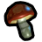
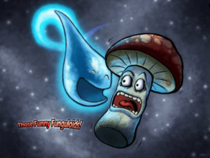
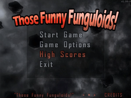
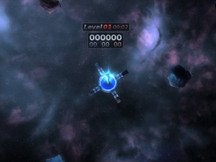
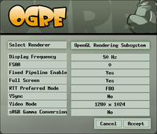

Funguloids
Dieser Artikel wurde für die folgenden Ubuntu-Versionen getestet:
Ubuntu 14.04 Trusty Tahr
Zum Verständnis dieses Artikels sind folgende Seiten hilfreich:

Those Funny Funguloids!  oder kurz Funguloids ist laut seiner Entwickler ein "space-flying-mushroom-picking-simulator". Was sich zwar sehr interessant anhört, aber wenig zur Erklärung beiträgt. Das Ziel des Spiels lässt sich jedoch auf folgende Formel verkürzen: "Sammle Pilze und werde reich". Im Gegensatz zum richtigen Leben muss man nicht auf giftige Exemplare achten, allerdings erschweren umherschwirrende Objekte das Einsammeln...
oder kurz Funguloids ist laut seiner Entwickler ein "space-flying-mushroom-picking-simulator". Was sich zwar sehr interessant anhört, aber wenig zur Erklärung beiträgt. Das Ziel des Spiels lässt sich jedoch auf folgende Formel verkürzen: "Sammle Pilze und werde reich". Im Gegensatz zum richtigen Leben muss man nicht auf giftige Exemplare achten, allerdings erschweren umherschwirrende Objekte das Einsammeln...
Wer sich noch an flOw erinnern kann, hat das Spielprinzip sofort verstanden. Nur ist das Spieltempo erheblich rasanter, weshalb Funguloids nicht den meditativen Charakter des Originals besitzt. Funguloids ist neben Linux auch für Windows erhältlich.
|  |
| Vorspann |
|  |
| Start |
|  |
| Spielszene |
Installation¶
 Das Spiel ist ab Ubuntu 13.10 (wieder) in den offiziellen Paketquellen enthalten und kann über folgendes Paket installiert [1] werden:
Das Spiel ist ab Ubuntu 13.10 (wieder) in den offiziellen Paketquellen enthalten und kann über folgendes Paket installiert [1] werden:
funguloids (universe)
 mit apturl
mit apturl
Paketliste zum Kopieren:
sudo apt-get install funguloids
sudo aptitude install funguloids
Bedienung¶
Bei Ubuntu-Varianten mit einem Anwendungsmenü erfolgt der Programmstart [2] über den Menüeintrag "Spiele -> Funguloids". Ansonsten verwendet man den Befehl funguloids.
Mit "Start Game" beginnt man erwartungsgemäß ein neues Spiel. Dieses lässt sich jederzeit mit der Taste Esc pausieren bzw. auch beenden. Die minimalistische Spielsteuerung erfolgt entweder über die Tastatur oder mit der Maus (siehe nächster Abschnitt). Unter "Game Options" kann man grafische Effekte und Hintergrundmusik ein-/ausschalten sowie die Lautstärke anpassen. Grundeinstellungen werden dagegen beim Programmstart festgelegt (siehe Einstellungen).
Aufgabe des Spielers ist das Einsammeln der farbigen Pilze. Das Sammeln selbst bringt keine Punkte. Diese werden erst vergeben, wenn man sie zur Basis zurückbringt. Da es verschiedenfarbige Basen gibt, werden dann aber nur die Pilze gezählt, die die gleiche Farbe wie die jeweilige Basis besitzen. Mit steigender Punktzahl wechselt automatisch die Schwierigkeitsstufe (neues Level). Vorsicht vor den Asteroiden – es gibt im Spiel keine Extraleben! Daneben gibt es noch andere Objekte, über die an dieser Stelle aber nichts verraten werden soll...
Tastenkürzel¶
| Tastenkürzel | |
| Taste(n) | Funktion |
← oder  | nach links bewegen |
→ oder  | nach rechts bewegen |
,
Strg ,
⇧ ,
⏎ oder  | Von Heimatbasis abheben |
| Esc | Pausefunktion. Mit ⏎ geht es weiter, ein zweites Esc führt zum Hauptmenü zurück. |
| Strg + F | Debug-Informationen ein-/ausblenden |
Einstellungen¶

Beim ersten Start wird der gewünschte "Renderer" erfragt. Nach Auswahl über die Schaltfläche "Select one" kann man weitere Angaben beispielsweise zur Auflösung oder zum Fenster-/Vollbild-Modus vornehmen. Möchte man später Änderungen vornehmen, löscht man den versteckten Ordner ~/.funguloids im Homeverzeichnis und startet das Spiel erneut. Unter Umständen muss man ein wenig herumprobieren, welche Einstellungen am besten geeignet sind. Bei einer Nvidia-Grafikkarte in Kombination mit dem proprietären Grafiktreiber nvidia aufgetretene Bildstörungen ließen sich z.B. mit der Einstellung RTT Preferred Mode=Copy beheben.
Auf Wunsch kann das Spiel mit eigener Musik unterlegt werden. Dazu speichert man MP3- oder OGG-Audiodateien im Ordner ~/.funguloids/music/. Mit F1 wird der nächste Titel abgespielt.
Infobox¶
| Those Funny Funguloids! | |
| Genre: | Jump'n'Run (im weitesten Sinn) |
| Sprache: | |
| Veröffentlichung: | 2007 |
| Entwickler: | MHGames |
| Systemvoraussetzungen: | - |
| Medien: | Download |
| Strichcode / EAN / GTIN: | - |
| Läuft mit: | nativ |
 Programmübersicht
Programmübersicht- Erstellt mit Inyoka
-
 2004 – 2017 ubuntuusers.de • Einige Rechte vorbehalten
2004 – 2017 ubuntuusers.de • Einige Rechte vorbehalten
Lizenz • Kontakt • Datenschutz • Impressum • Serverstatus -
Serverhousing gespendet von